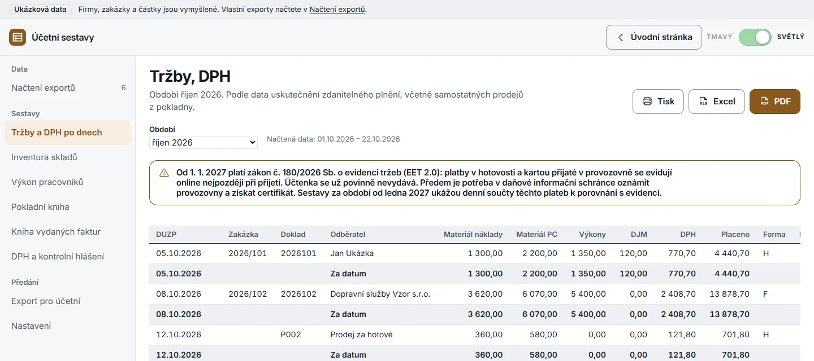
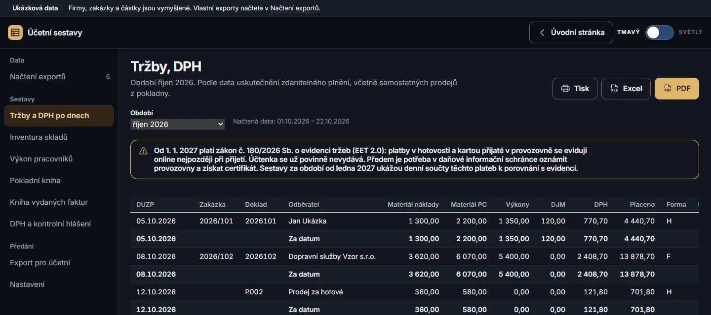

Denní i měsíční sestavy pro účetní a soubory pro POHODU,
Money S3 a kontrolní hlášení. Exporty se zpracují jen ve vašem
prohlížeči; ven odchází jen e-mail, který sami pošlete účetní.
Registrace není potřeba.
Denní i měsíční sestavyPOHODA, Money S3 a ISDOCKontrolní hlášení DPH
nastroje.mujautoservis.eu/sestavyUkázková data · smyšlená firma


Ukázková data · faktura 2026102
2026102Vystavené faktury a položky · XLSXExport rozpoznán
Motorový olej 5W-30 1 l5 ks · materiál1 450,00
Olejový filtr1 ks · materiál220,00
Brzdové destičky přední4 ks · materiál4 400,00
Práce mechanika6 hod · výkony5 400,00
Tržby, DPHŘádek dokladu 2026102 · říjen 2026
Materiál náklady
3 620,00
Materiál PC
6 070,00
Výkony
5 400,00
DPH
2 408,70
Placeno, forma F
13 878,70
Kontrolní hlášení A.4
Skladová cena materiálu je dohledaná z výdejek skladu,
marže materiálu 2 450,00 Kč. Odběratel je plátce DPH
a plnění přesahuje 10 000 Kč, faktura proto jde
do oddílu A.4 kontrolního hlášení.
Den nebo měsícvýchozí období podle Nastavení
Jen v prohlížečiven jde jen e-mail účetní
Šest sestavtržby, sklad, pracovníci, pokladna, faktury, DPH
Čtyři formátyPOHODA, Money S3, ISDOC, kontrolní hlášení
Sestavy
Co účetní z exportů IC Office dostane.
Za jeden den, měsíc, vlastní rozsah nebo celé načtené období. Zda se
sestavy otevřou za den, nebo za měsíc, nastavíte v Nastavení.
Sestavy jsou podklad pro účetní, nenahrazují účetnictví ani daňová
podání; tržby nástroj neeviduje.
Tržby a DPH po dnech
Materiál ve skladových i prodejních cenách, výkony, drobný
materiál a forma úhrady. Každý den má vlastní součet. Od ledna
2027 i platby v hotovosti a kartou po dnech k porovnání
s evidencí tržeb (EET 2.0).
Tržby, DPHInventuraPracovníciPokladnaFakturyDPH a KH
5. 10.4 440,70hotově
8. 10.13 878,70převodem
12. 10.701,80prodej z pokladny
14. 10.2 504,70kartou
Ukázková data · Kč s DPH
Podklad pro DPH
Řádky přiznání na výstupu a oddíly A.4 a A.5 kontrolního hlášení.
Řádky přiznáníZáklad a daň podle sazebDPHFaktura 2026102Plátce DPH, nad 10 000 KčA.4Ostatní plněníSouhrnně za obdobíA.5
K tisku a do Excelu
Každou sestavu vytisknete, uložíte do PDF nebo stáhnete jako
Excel.
Inventura skladůbez DPH, podle účtůPDF · Excel
Výkon pracovníkůpodle zakázekPDF · Excel
Pokladní knihase zůstatkemPDF · Excel
Kniha vydaných fakturs neuhrazenýmiPDF · Excel
Soubory pro účetní programy
Vydané faktury a pokladní doklady pro import, elektronické faktury
a soubor pro daňový portál.
POHODAfaktury a pokladní dokladyXML
Money S3faktury a pokladní dokladyXML
ISDOC 6.0.2víc faktur v jednom ZIPuZIP
Kontrolní hlášení DPHoddíly B doplní účetníXML
Den, nebo měsíc
Vyberte si, za jaké období se sestavy otevřou. Rozsah pak změníte
jedním výběrem.
říjen 2026
Jeden denMěsícVlastní rozsahCelé období
Ukázkový měsíc
Sestavy vyzkoušíte na vymyšleném měsíci autoservisu, bez vlastních
dat.
Skladové ceny z výdejek
Ke každé faktuře se dohledá skladová cena vydaného materiálu a
marže.
Data zůstávají u vás
Exporty se zpracují v paměti prohlížeče a po zavření stránky
zmizí.
Bez registrace
Žádný účet ani instalace. Stačí otevřít stránku a načíst exporty.
Exporty z IC Office
Čtyři exporty. Všechny sestavy.
Druh souboru se pozná podle záhlaví, název může být libovolný.
Vystavené faktury a jejich položky
Pro tržby, knihu faktur, DPH a kontrolní hlášení.
Pokladna
Pro pokladní knihu a prodej za hotové.
Naskladněné a vydané zboží
Pro inventuru a skladové ceny materiálu.
Mechanici a zakázky
Pro výkon pracovníků.
Načtení exportů
Rozpoznáno 4 ze 4 říjen 2026
Vystavené faktury a položkytržby · faktury · DPH
Pokladnapokladní kniha
Naskladněné a vydané zbožíinventura · skladové ceny
Mechanici a zakázkyvýkon pracovníků
Tržby, DPHříjen 2026
4 440,70hotově
13 878,70převodem
2 504,70kartou
Ukázková data
Jak začít
Od exportu k podkladům pro účetní.
Vyexportujte z IC Office
Faktury s položkami, pokladnu, pohyby zboží a mechaniky za období,
které chcete zpracovat.
Načtěte soubory
V Načtení exportů vyberete všechny soubory najednou. Druh každého
se pozná podle záhlaví.
Vytiskněte nebo stáhněte
Sestavu vytisknete, uložíte do PDF či Excelu. Soubory pro POHODU,
Money S3 a úřad stáhnete.
Služby pro servis
Další služby pro autoservisy.
Samostatné aplikace s vlastním účtem a vlastními informacemi o
zpracování dat.
Faktury s QR Platbou, odběratelé načtení z ARES a evidence úhrad.
Soukromí
Soukromí, úložiště a odeslání účetní.
Tato stránka
Nepoužívá cookies ani analytiku a nenačítá nic z cizích serverů.
Pokud změníte barevný motiv, uloží se volba do úložiště vašeho
prohlížeče (localStorage), aby platila i při další návštěvě.
Účetní sestavy
Exporty z IC Office se načtou a zpracují jen v paměti prohlížeče a
po zavření stránky zmizí. Do localStorage tohoto prohlížeče se
ukládá Nastavení: údaje firmy, sklady, e-mail účetní a záznam o
odeslaných obdobích. Přístupový kód je odděleně v sessionStorage
pro relaci panelu; při obnovení relace prohlížeče může zůstat
dostupný. Nastavení smažete
tlačítkem Obnovit výchozí, vše vymazáním dat webu v prohlížeči.
Odeslání účetní
Když podklady odešlete účetní, ručně nebo podle plánu v doplňku,
převezme je služba na našem serveru a pošle e-mailem ze společné
adresy služby; odpovědi účetní přijdou na e-mail firmy. Přílohy mohou
obsahovat jména a adresy vašich zákazníků. Služba je neukládá: do
provozního záznamu jde jen označení firmy, výsledek, počet a
velikost příloh a proti dvojímu odeslání si 24 hodin pamatuje
otisk označení odeslání.
Zpracování pro váš servis
Při odeslání zpracováváme údaje vašich zákazníků jako zpracovatel
pro váš autoservis (čl. 28 GDPR), jen k doručení e-mailu na
adresy, které zadáte, a jen po dobu odeslání. Server provozuje
netcup GmbH v Norimberku. Spojení je šifrované (TLS), odeslání
vyžaduje přístupový kód firmy a má limity. Smlouvu o zpracování s
vaší účetní uzavírá autoservis.
Služby z předchozí sekce mají vlastní informace o zpracování dat na
svých doménách.
Podklady pro účetní z exportů, které už máte.
Vyzkoušejte sestavy na ukázkovém měsíci, nebo rovnou načtěte vlastní
exporty z IC Office.